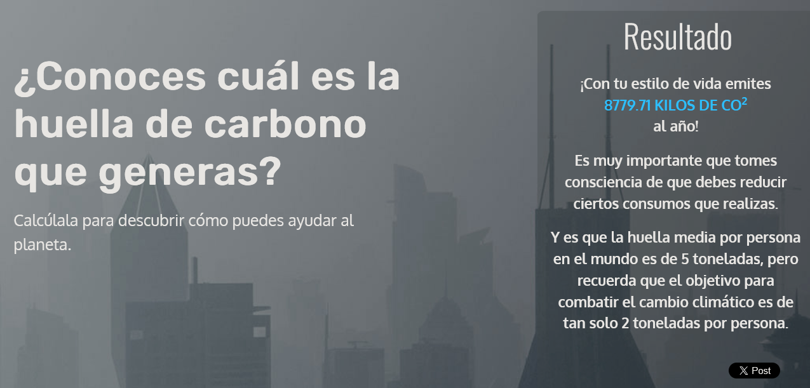
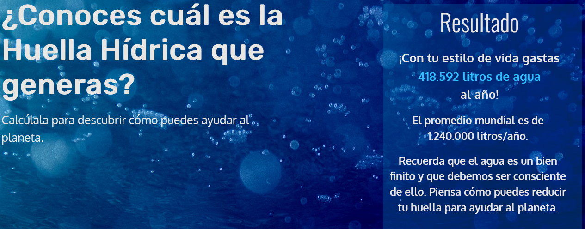

| 1. Huella ecológica | |
|---|---|
| Resultados | Compromisos |
Si todo el mundo viviera como tú, necesitaríamos 2.5 planetas Tierra para vivirTu edad esde entre 17 y 36 añosLa huella ecológica a lo largo de la edad tiene forma de campana. Es máxima en la edad adulta y disminuye en la infancia y la tercera edad. ¡Descontando la impresionante huella ecológica de nuestros primeros años de vida, solamente en pañales de usar y tirar! La casa en la que viveses una vivienda en un bloque de pisosDisponer de servicios comunes de agua y energía reduce mucho la huella ecológica de las viviendas dentro de un bloque de pisos. No obstante, las necesidades de energía variarán mucho según cuál sea la posición del piso en el edificio y su orientación. Por ejemplo, no es lo mismo un bajo orientado al norte que un último piso o un ático orientado al sur, que garantiza una fuerte insolación y tal vez problemas para mantener la casa fresca en verano. En tu casa viventres personasTe aproximas al tamaño medio de los hogares en España, que es de 2,5 personas (2021). Eso implica que será fácil ponerse de acuerdo para reducir el tamaño de vuestra huella ecológica. El tamaño de tu hogares de más de 121 m2Las casas grandes, como la tuya, pueden ser grandes sumideros de energía. Por ejemplo, si necesitan más de siete u ocho radiadores de calefacción. Es una buena oportunidad para revisar si están colocados los termostatos necesarios, si las paredes y los techos están bien aislados, etc. En materia de calefacción...no tienes ningún sistema de calefacciónA no ser que vivas en una zona extremadamente cálida la carencia de cualquier sistema de calefacción indica un serio problema de pobreza energética. La pobreza energética es una lacra de nuestra sociedad que debe ser combatida. ¿Aire acondicionado?No tienes aire acondicionadoExisten infinidad de soluciones para refrigerar nuestra casa en los meses de canícula sin necesidad de gastar dinero en una costosa instalación de aire acondicionado. Refrescar la casa al amanecer, evitar la entrada del sol, usar ventiladores y evaporadores, son algunas de ellas. Tu estilo de uso de la climatización es...planet-friendly: usas la calefacción y/o el aire acondicionado con mucha moderaciónTu habilidoso comportamiento con la climatización contribuye a reducir tu huella ecológica y también te hace ahorrar mucho dinero. Tus ventanasno están bien aisladasLas ventanas de tu casa son sumideros por donde se escapa la energía que tan cara te cuesta. Pero hay soluciones. Si no puedes llegar a instalar dobles ventanas o dobles cristales, un poco de bricolaje impedirá las peores fugas. Etiqueta energéticaNo sabes si tus aparatos son economizadores o noSi ninguno de tus electrodomésticos tiene etiqueta energética superior, comienza por el frigorífico. Si no tiene etiqueta energética superior o no tiene etiqueta energética de ninguna clase, lo más seguro es que sea un modelo antiguo que está derrochando energía las 24 horas del día. Si es de tamaño estándar te saldrá a cuenta cambiarlo y si es posible por uno de tamaño menor. Lo amortizarás en cuatro o cinco años. Estos son tus medios de transporte favoritosEl coche es una de tus principales opciones para moverteEl coche de motor de combustión es la opción más cara y más contaminante que existe para el transporte. Investiga otras opciones si quieres reducir el tamaño de tu huella ecológica. Estos son tus medios de transporte favoritosCaminarCaminar no es una excentricidad, es otra opción para la movilidad en las ciudades. Al igual que en el caso de la bicicleta, ahorras mucho dinero, no molestas a nadie con ruido, humos y ocupación de la vía pública y además tu salud mejora notablemente. Tu cochees un modelo con pocas pretensionesNo hagas mucho caso de la publicidad de coches ecológicos. El principal factor que determina el consumo del vehículo es el tamaño: coche pequeño, coche economizador y menos contaminador. La compañía en tu cocheno te parece mal, a veces vas acompañadoCompartes tu coche con regularidad, puedes hacerlo con más frecuencia y más seguridad utilizando alguna aplicación. La comprala haces una vez a la semana, más o menosIr a la compra con frecuencia y en tiendas próximas a tu domicilio estimula el comercio local y te permite ahorrar dinero y buscar las mejores calidades de los productos. Tu relación con las plantases sólida, tienes un jardincito para cuidarComo la mayoría de los seres humanos, disfrutas de las plantas, ya sea en algunas macetas o en un pequeño jardín. Recuerda que el consumo de agua de una casa está en relación directa con la cantidad de plantas que cuidas: practica el riego economizador. Sistemas de riego economizadorNo los usas, corres peligro de derrochar mucha aguaYa estás tardando en ir a tu proveedor habitual de útiles de jardinería para contratar algún sistema de riego economizador, apropiado para el tamaño de tu vergel. Ahorrarás agua y algo de dinero, pero lo principal es que alejarás la amenaza de una posible sequía. Fontanería economizadoraEnhorabuena, tienes instalados varios sistemas de fontanería economizadoraParece que tienes controlada la fontanería de tu casa con la instalación de varios artilugios economizadores de agua. No olvides hacer un uso prudente del WC, el principal elemento de consumo de agua en una casa. Los logos tóxicos en los productos que compraste preocupan, rechazas los productos que los llevanNo te gustan las calaveras ni los peces muertos en las etiquetas de los productos de limpieza o bricolaje que compras. Es una buena costumbre, porque todo lo que es tóxico para el medio ambiente también lo es para ti. La carne y túTe agrada que figure en el menú con regularidadComo la mayoría de las personas combinas la carne con las verduras para obtener una dieta sana. Reducir tu consumo de carne te permitirá comprar la de mejor calidad y reducir mucho tu huella ecológica. Utiliza las recetas tradicionales para hacer sabrosos guisos con una proporción de carne / vegetales adecuada (por ejemplo, 25% de carne y 75% de vegetales). Los contenedores para la separación de residuos en casate parecen lógicos y tienes los habitualesAlgo sí separas, por ejemplo, el papel y cartón o el vidrio. Añade más contenedores de separación, hasta tener la colección completa: papel, vidrio, envases ligeros, materia orgánica y otros especiales (pilas, lámparas, etc.). Cuando vas al mercado,combinas la compra de alimentos envasados y frescosCombinas la compra de alimentos frescos con la de empaquetados, como hacemos la mayoría de las personas. Podrás aumentar la proporción de productos frescos si te acostumbras a cocinar con más frecuencia. Ten cuidado que cocinar se puede convertir en un vicio adictivo. |
- Me gustaría compartir mi carro con otras personas para ir a ;a universidad, además de ir a lugares cercanos a pie o aprender a andar en bicicleta. - Debo fijarme más en las etiquetas de consumo de energía de los aparatos eléctricos. |
| 2. Huella de carbono | |
|---|---|
| Resultados | Compromisos |
|
 |
- Optaré por una dieta reducida en carnes, pero también evitaré consumir productos como leche de almendras, ya que está demostrado que producirla consume demasiada agua e impacta negativamente la biodiversidad.
-También me gustaría comprar más productos frescos de tiendas locales en lugar de alimentos ultraprocesados. |
| 3. Huella hídrica | |
|---|---|
| Resultados | Compromisos |
|
 |
- Creo que aún puedo reducir el tiempo que tardo en banarme, además de poder reciclar el agua para regar las plantas, agua para el trapeador, etc. - Puede que no necesite lavar el carro tan seguido - Debo ser más agresiva con el boicot a las empresas que usas nuestros recursos a sus anchas (por ejemplo, CocaCola. Lo cual va a ser difícil considerando que es quien nos surte los garrafones de agua Ciel). |